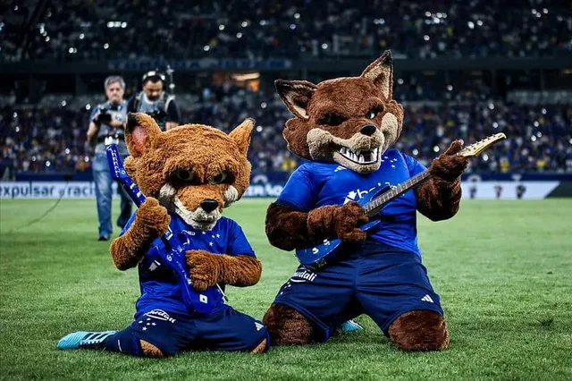

O Cruzeiro Esporte Clube, conhecido como "La Bestia Negra" na América do Sul e carinhosamente chamado de "Raposa" por sua torcida, é uma das instituições mais vitoriosas e tradicionais do futebol brasileiro. Fundado em 2 de janeiro de 1921 pela colônia italiana de Belo Horizonte como Società Sportiva Palestra Italia, o clube foi forçado a mudar de nome em 1942, devido à Segunda Guerra Mundial, adotando a identidade da mais importante constelação do hemisfério sul, o Cruzeiro do Sul.
Com uma história repleta de glórias, o clube se consolidou como um gigante nacional e continental. Sua primeira grande conquista de expressão nacional foi a Taça Brasil de 1966, em uma final histórica onde a lendária equipe liderada por Tostão, Dirceu Lopes e Piazza desbancou o Santos de Pelé, que dominava o cenário mundial. Esse time, conhecido como a primeira "Academia Celeste", marcou o início de uma era de ouro.
O Mineirão, inaugurado em 1965, tornou-se o palco sagrado do Cruzeiro, onde o clube empilhou troféus e protagonizou jogos memoráveis. A década de 1970 viu a consagração continental com a conquista da Copa Libertadores da América em 1976, com um time imortalizado por craques como Raul Plassmann, Nelinho e Jairzinho.
A década de 1990 e o início dos anos 2000 solidificaram o Cruzeiro como o "Rei de Copas". O clube se tornou o maior campeão da Copa do Brasil, com seis títulos (1993, 1996, 2000, 2003, 2017 e 2018), e conquistou o bicampeonato da Libertadores em 1997.
O ano de 2003 é um capítulo à parte na história celeste. Sob o comando de Vanderlei Luxemburgo e a genialidade do meia Alex em campo, o Cruzeiro alcançou um feito inédito no futebol brasileiro: a Tríplice Coroa, vencendo o Campeonato Mineiro, a Copa do Brasil e o Campeonato Brasileiro no mesmo ano, com uma campanha avassaladora. O clube ainda adicionaria mais dois títulos do Brasileirão à sua galeria, em 2013 e 2014.
Principais Conquistas:
Grandes ídolos vestiram a camisa azul e branca, deixando um legado eterno. Nomes como Tostão, Dirceu Lopes, Piazza, Alex, Sorín, Fábio e Ronaldo Fenômeno, que despontou para o mundo no clube, são reverenciados pela "Nação Azul". A rivalidade com o Atlético Mineiro, o "Clássico Mineiro", é uma das mais intensas e equilibradas do Brasil, parando o estado de Minas Gerais a cada confronto. Mais que um clube, o Cruzeiro é um símbolo de glória e tradição, uma constelação que brilha intensamente no firmamento do futebol. 